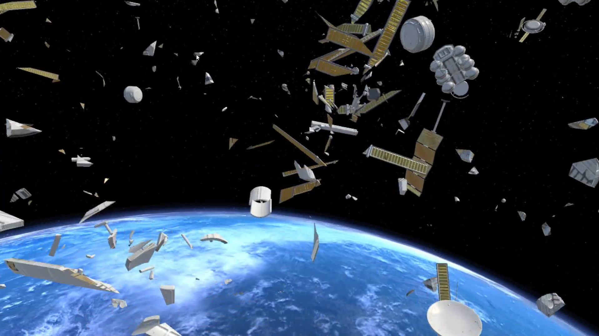

Jonathan David
Welcome to my portfolio!
I am a visual media creator focusing on the intersection of technology and entertainment. Here, you'll find information on my previous body of work. Take a look at a few of my most recent projects!
Virtual "Go U Northwestern" Music Video
Virtual music video project performed by members of the Northwestern University "Wildcat" Marching Band (NUMB).
Read More
Editor; May 22, 2020.
"Tabula Rasa"
VR research project demonstrating the Kessler Effect on space debris proliferation.
Incorporates cutting edge EEG sensor technology to allow the user to affect the movement speed of satellite objects via concentration.
Supervised by Prof. Ozge Samanci, Northwestern University.
Research Assistant; Jun 2020 - Present.
